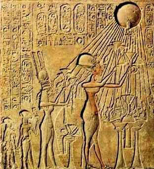
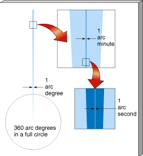
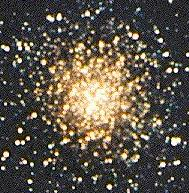
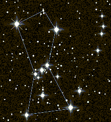
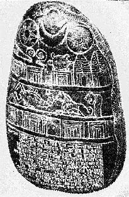
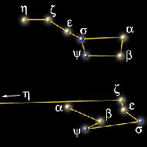

ASTR 1230 (O'Connell) Lecture Notes
1. INTRODUCTION TO THE NIGHT SKY
AND CONSTELLATIONS
{kind=link}
{kind=link}
A. NAKED-EYE ASTRONOMY
"Naked eye" observations (i.e. without optical aid from lenses or mirrors) were the only kind possible for most of human history! Telescopes were not invented until 1608 AD. Nonetheless, great accomplishments were possible without telescopes, e.g.:- Determination of the size and shape of the Earth and Moon; origin of eclipses (Greeks, 500 BC - 200 AD)
- Discovery of Earth's motion around the Sun (Copernicus, 1513)
- Kepler's Laws of Planetary Motion (1609, based on Tycho's observations), which led to Newton's Laws of Motion and the modern scientific revolution
B. MOTIVATIONS TO OBSERVE THE SKY
The concerted study of the sky started long before modern science arose ca. 1500 AD. How long? We don't really know---probably at least 8000 years before. Almost every human society, pre-literate or literate, whose culture we have been able to sample in detail shows some awareness of celestial phenomena --- if not in the form of written records then in other ways, such as the alignment of buildings or other structures to cardinal directions. Initial motivations:- Curiosity---the most enduring motivation for trying to understand nature
- Aesthetics
- Fear/Religious Belief:
-

- One example: Astrology. This is the idea that the motions of the Sun, Moon, and planets against the stellar background can be used to predict the future and can influence human personalities. It derived from the ancient belief that these objects are living gods, who betray their intentions by their movements. This was obviously a powerful motivation for observing the sky. In the carving shown at the right the Egyptian Pharaoh Akhenaton (ca. 1350 BC) and his family are communing with the Sun god Aten, the source of Akhenaton's power. As our scientific understanding grew, astrology lost its interest for most people. We realized that the Sun, Moon, and planets are inanimate objects, moving in highly regular and predictable patterns in response to the well understood force of gravity. Constellations and the Zodiac were recognized to lack physical significance (see below). New planetary bodies were discovered that astrologers had somehow failed to detect. Statistical tests showed no correlation between "sun signs" and personality or personal history. There is no evidence, theoretical or empirical, for astrology. Astrology lingers only as a form of pseudo-science and popular entertainment. But it, and related ideas, did play an important historical role in encouraging the systematic observations of the sky that ultimately led to the scientific interpretation of the solar system.
{kind=link}
- Navigation: on land & sea
- Time Keeping
- Calendar Keeping: tracking the date & seasons For some early societies (e.g. the Polynesians, who sailed thousands of miles across the uncharted ocean), these could be critical survival technologies.
{kind=link}
C. NAKED EYE MEASUREMENTS
Only a few kinds of measurements are possible with the naked eye: 1. Angular Separations
1 degree = 60 minutes of arc; 1 arcmin = 60 seconds of arc Don't confuse these angular units with units of time! Always use the "arc" terminology for clarity. |
 |
[Note: the symbol ~ means "approximately"] |
Angular scales of "pan" of Big Dipper |
{kind=link}
{kind=link}
{kind=link}
{kind=link}
-
The human eye has 1-2 arcmin resolution---i.e. it
cannot distinguish two stars separated by less than 1-2 arcmin.
-
The Hubble Space Telescope, for
comparison, has
better than 0.1 arcsec resolution; i.e. it can resolve a quarter at a
distance of 30 miles
{kind=link}
-
1 degree = width of index finger @ arm's length
10 degrees = width of closed fist @ arm's length
20 degrees = distance thumb to little finger on outstretched hand @ arm's length Example: the angular diameter of the Sun or Moon is about 0.5 degree. You can block out either with your index finger held @ arm's length. Try it! The "Hand-y" scale is useful to remember as you orient yourself to the night sky and compare objects you see there to star charts.
-
Astronomers quote star brightnesses on
the magnitude scale. This scale has roots in
star catalogs made by the ancient Greeks (ca. 150 BC). It was based
originally on simply ranking the stars by their apparent
brightness as seen with the unaided eye. Without instruments, this
kind of ranking is about the best observers can do.
Today, the scale has been quantified in terms of the light power
deposited by an individual star per unit area at the Earth and tied
to telescopic measurements made with electronic detectors.
The magnitude scale is logarithmic, open-ended, and runs
"backwards" (like a sports ranking scale):
Brighter objects have smaller magnitudes.
The brightest stars are about 0 magnitude; the faintest visible to the
naked eye are about 5-6 magnitude. The brighter planets and most
familiar stars have magnitudes in the range -4 to +2.
There are only 11 stars brighter than magnitude 1 visible from
Charlottesville but there are 1630 stars brighter than magnitude 5.
-
The faintest objects yet detected (by the Hubble Space Telescope)
are 30th magnitude, or over 1 billion times fainter than visible to
eye.
-
Even crude measures of angles and brightnesses, if made
systematically over days, months, or years, immediately reveal the
presence of repeating time cycles in the motions of
the Sun, Moon, and planets. As mentioned above, these were important
for their practical value. But they also showed there was order in
the universe, even if the origin of the motions was mysterious. They
provided strong intellectual stimulus for investigations of the structure of
the universe.
{kind=link}
D. EASILY VISIBLE PHENOMENA
- STARS: form the backdrop or
"reference frame" against which other objects' motions are
measured. About 2000-5000 are visible to the eye (depending on
eyesight) over the whole sky. About 1000 are visible on a dark, clear
night from a given location. The brighter stars form conspicuous
patterns which seem unchanging (to the eye).
- Motion: stars move continuously in lockstep across sky from East to West. Patterns come back to the same location in the sky after slightly less than 24 hours. Star locations in the sky at a given time of night change systematically throughout the year.
- Can you see all the stars that exist? NO! There are vast numbers of stars that are invisible to the eye. With our 8-in telescopes, we can see stars about 800 times fainter than the naked eye limit---and there are 5 million of these over the whole sky. But our star system (the Milky Way Galaxy) contains about 100 billion stars, and there are billions of galaxies!
- SUN: The most obvious astronomical object (and most important for us!). Steady brightness. Has a slow eastward motion relative to the stars (about 1o per day; we have to infer the Sun's position since the stars are invisible in daylight). Returns to the same place against the star background in one year (365.25 days).
- MOON: Very bright, but much fainter than
the Sun. More rapid eastward motion relative to the stars
(about 13o per day).
-
Shows a drastic change in brightness and phase
(bright part as a fraction of a full circle) during each cycle, from
totally dark to fully illuminated. Takes 29.5 days to return to the
same phase (e.g. "full"). This is the cycle we have formalized in our
calendar as the month ("moonth"). There are 12 lunar cycles
per year.
Note: Moonlight was of enormous practical value before electrical
lighting was invented, so the phases of the Moon were closely followed
in earlier times.
- PLANETS: Less obvious. 5 bright, starlike objects; these have a slow, complex predominantly eastward motion relative to the stars. In order of speed of motions (fastest to slowest): Mercury, Venus, Mars, Jupiter, Saturn. Two of these (Mercury, Venus) are always found relatively near the Sun; others can be up to 180 degrees away. Although all the planets have perceptible disks in telescopes, the naked eye cannot discern these.
- METEORS: sudden streaks of light in sky; typical rate 5-10 per hour. These are small pieces of ice or rock, burning up in Earth's atmosphere. Often called, but are definitely not, "falling stars." Concentrations of debris (from comets) produce "meteor showers," e.g. the Leonids, lasting up to several days. 
- COMETS: occasional (once every few years) flamelike objects moving slowly through the sky over several weeks. Comets are large (~ 1 km) chunks of ice, usually on very elongated orbits, that begin to release gas and dust when they become heated by the Sun on entering the inner Solar System. E.g. Hale-Bopp (1997), which is visible in the night sky panorama at the top of this page.
- STAR CLUSTERS: compact groups of stars, all formed together. E.g. the Pleiades and Hyades. About a dozen are visible to the naked eye, but scores are visible in small telescopes. The largest are the "globular clusters" (e.g. M13, shown at the right), containing up to 100,000 stars. Since all stars in a given cluster have the same age, clusters became the keys to understanding stellar evolution.
- DIFFUSE NEBULAE: clouds of interstellar gas lit up by hot stars. A handful are visible without telescopes. E.g. the Great Nebula in Orion. These mark the birthplaces of young stars. Smaller "planetary nebulae" mark the death of old stars.
- MILKY WAY: appears as a faint, diffuse band of light arcing across the sky. It is the combined light of millions of distant stars in the plane of our own Galaxy (a massive, flattened star system), seen edge-on.
- EXTERNAL GALAXIES: other large star systems like our Galaxy. 4 are visible to the eye, 2 of these are in the northern hemisphere. E.g. the Andromeda Galaxy---the most distant object you can see without a telescope. It is 2 million light years from us, meaning that the light you see from it tonight started its journey 2 million years ago. For more discussion of this lookback effect, see this ASTR 1210 page. Hundreds of galaxies are detectable in small telescopes.
{kind=link}
{kind=link}
{kind=link}
{kind=link}
{kind=link}
{kind=link}
E. ORIENTATION IN THE NIGHT SKY
It is important, but difficult, to try to visualize your situation when you look into the sky at night. You are standing on a spherical, spinning, moving planet. What you can see in the sky is determined by the Earth's orientation and position in its orbit around the Sun. Your view of the sky is always made in your "local reference frame".{kind=link}
{kind=link}
-
The local "horizon plane" is the (ideal, imaginary) plane
"tangent" to (just touching) the Earth at your location; you can see
objects above the plane but not below. The horizon plane sweeps
across the sky as Earth spins; it determines the rising and setting of objects.
The horizon plane is different at each location on Earth.
The Celestial
Sphere (CS) is a geometric construct used to
vizualize the positions of astronomical objects.
{kind=link}
-
The celestial sphere is an imaginary hollow sphere centered on Earth.
It is shown shaded in the illustration above. Directions to key
orienting positions and to each astronomical object are imagined to be
marked on the surface of sphere.
Exactly one-half of the celestial sphere (one hemisphere) is always
above your local horizon.
{kind=link}
-
An astronomical object is said to transit when it crosses the
meridian. At this time it is farthest from the horizon and
highest in the sky.
F. NIGHT SKY SIMULATIONS
In class, we will use the "Starry Night" planetarium software to simulate the appearance and motions of the night sky. This is an excellent app that is very useful to purchase if you're more serious about observing.G. CONSTELLATIONS
 The stars are not uniformly distributed on the sky. Many of the brighter stars form conspicuous patterns. To the eye, the patterns seem unchanging: the stars appear "fixed" relative to one another. Historically, the patterns were very useful for orientation, navigation, and determining the time of night or the date and so were given names.{kind=link}
-
(The human brain is wired for this kind of pattern
recognition: people who could recognize the tiger lurking in the
forest shadows survived better than those who could not.)
History
-

- It was natural for people to seek deeper meaning in these remote, silent, but majestic figures at the limit of the visible world. So, the constellations often were given important mythological or religious associations. These were, however, strongly culture-dependent, and the same patterns can have very different interpretations in different cultures.
- Some associations we recognize today are very ancient, going back to around 2000 BC (e.g. Leo the lion, Scorpio the scorpion. See the carved stone at right; click for enlargement.) Some are new (Microscopium). Few resemble their namesake closely.
- The Greeks (500 BC - 200 AD) added rich mythological associations and fanciful stories (e.g. for Taurus, Perseus, Andromeda). Aratus' epic poem The Phaenomena (ca. 270 BC) describes the constellations as a memory aid to navigators. Ptolemy's Almagest (135 AD) listed positions of 1022 stars in 48 constellations. His catalogue was used for the next 1400 years(!)
- The Romans inherited the Greek myths. The names of most constellations are Latin.
- Arab astronomers were active 700-1600 AD, and many modern star names have Arabic roots: Algol ("the demon star"), Aldebaran ("the follower"), Betelgeuse ("armpit of the Central One").
- 1600+: new constellations were added to fill in blanks, mostly in the Southern Hemisphere. E.g. Telescopium, Pyxis (compass). Elaborate & beautiful printed atlases of classical associations appear (an illustration of the north polar constellations from a 1660 atlas by Cellerius is shown below).
- In 1930 the International Astronomical Union established formal boundaries for 88 constellations that cover the entire celestial sphere. 74 are visible from Charlottesville. Click here for an illustration of the boundaries for Orion.
{kind=link}
{kind=link}
{kind=link}

Significance of the constellations:
- Constellations have no physical significance. The
associations are arbitrary & man-made. Constellations are not natural
groups of stars. The fainter stars in a constellation
don't participate in the pattern
(as illustrated here
in the case of the Orion region.) Stars in a given constellation lie near
the same line of sight from Earth but are not necessarily close
to one another in space. (Click here for an
illustration in the case of Orion.) Shapes are specific to the Earth's
location in 3-D space (a fact not recognized when ancient astrological
systems, which attached significance to the shapes, were
developed).
-
Click here to see a
modern, deep telescopic image of Orion that reveals the many beautiful
fainter features lying in this direction but mostly invisible to
the naked eye.
- The stars are all moving with respect to one another, even
though the changes would not be apparent to the eye except over
thousands of years. Therefore, constellation patterns are
transitory. The changing appearance of the "Big Dipper" (part of
Ursa Major) now and 100,000 years from now is shown below. Here is an
animation of the motion of the Big Dipper stars over 200,000 years.
 - Modern astronomers use constellations only as a convenient "address" to roughly locate objects in the sky.
{kind=link}
{kind=link}
{kind=link}
{kind=link}
{kind=link}
Terminology:
- The zodiac ("circle of animals") is the set of constellations through which the Sun passes in the course of a year. The Sun's path is called the ecliptic, and the Moon and bright planets also stay near this path. Given the modern boundaries of the constellations, there are 13 ecliptic constellations. But in classical astronomy (and current-day astrology) there are only 12---one for each month. The ecliptic, and hence zodiac, is determined by the accidental orientation of the plane of Earth's orbit. Most zodiacal constellations are faint and uninteresting (e.g. Libra, Capricorn, Aquarius).
- Constellation names: Latin, often translated from Greek
- Star names: the brighter stars have "common" names derived
from a mix of Greek, Latin, & Arabic. Most stars brighter than 20th
magnitude have catalog numbers (most recently recorded by
the Gaia
space observatory). Fainter stars---i.e. most stars---are
largely uncataloged.
-
Bright stars have many synonyms since they appear in many catalogs
- Sirius ("the scorched one" in Greek) --- common name
- = Alpha Canis Majoris --- Bayer listing
- = 9 Canis Majoris --- Flamsteed listing
- = HD 48915 --- Henry Draper Catalog listing
- = BD -16 1591 --- Bonner Durchmusterung listing
- = SAO 151881 --- Smithsonian Astrophysical Observatory (SAO) listing
- = 0645-16 --- Right Ascension/Declination coordinate listing
-
E.g: the star at the mouth of Canis
Major (the large dog); brightest star in the sky
- Sirius ("the scorched one" in Greek) --- common name
- There are also many catalogues of non-stellar objects, such as nebulae, star clusters, and galaxies. The three you will most frequently encounter are the New General Catalogue ("NGC"), the Messier Catalogue ("M"), and the The Caldwell Catalog of Deep-Sky Objects (an updated version of the Messier Catalogue).
{kind=link}
{kind=link}
H. COMPLETING LABORATORY 1 AND THE CONSTELLATION QUIZ
- Read the Lab 1 chapter in the Manual.
- The Lab will be given on the first two usable nights on or after the night of this lecture. You can come to either night. Check the Observatory status via the recorded message (924-7238) after 6:30 PM.
- You will work in groups. Each group will be assigned a set of stars and constellations to learn from the required list in the Lab 1 description. After a group has mastered these, they will teach the other groups.
- Advice on learning constellations:
- Review and disregard the misconceptions about the sky that are listed in Ten Things to Forget About Astronomy.
- Because not all objects on the Constellation Quiz are identified by name on your Sky Wheel, consult the following sky charts, which contain labeled objects for the Quiz:
- Find the "North Star," Polaris (in Ursa Minor = "the Little Dipper"). Polaris is near to, but not exactly coincident with, the North Celestial Pole. It is not a very bright star. Easiest method is to use the two "pointers" at the end of the bowl of Ursa Major (the Big Dipper). See the sketch below. Alternatively, if Ursa Major is low in the sky, you can use the stars in Cassiopeia as pointers. See this illustration.
- Then orient yourself N/S/E/W. When you face Polaris, your right arm is toward the East and your left is toward the West.
- Find your zenith and your meridian.
- Orient your sky wheel to match the time of night by aligning the date and time tickmarks. (Note: time marked is always Standard---not Daylight Savings--- time.) Using the wheel and pattern recognition, "hop" to other bright stars and groups. Use brighter, more conspicuous constellations to locate others. Practice locating all the constellations, stars, and other features on the Manual list for this semester.
- Difficulties with using charts:
- The scale of the real sky is very different from a chart
- Brightnesses can't be represented well on paper. Relative
brightnesses of real stars look very different.
- Poor sky transparency, city lights, or moonlight reduce visibility.
- The scale of the real sky is very different from a chart
- Practice using averted vision to find fainter objects: rather than looking directly at the target, stare about 15 degrees away, but concentrate on the target's location. (This puts the image on a more sensitive part of your retina.) You can find more about the capabilities of the naked eye here.
{kind=link}
{kind=link}
Assignment
- The Constellation Lab (Lab I) will take place on the next two
usable lab nights, starting Monday, 9/5. You must attend
one of the two sessions. Whether the Observatory will be open will be
announced on the recorded message (924-7238) by 6:30 PM. We will
also send an email alert to the class.
-
It would be a good idea to become familiar with the various
forecasts on the ASTR 1230 Weather Page
in planning for this and later labs.
- To prepare for the Constellation Lab: read Lab 1 description (Secs. 1.1 to 1.8); consult constellation descriptions (Sec. 1.9) as needed.
- Download, print, & read lecture notes for Lec 1
- Take Review Quiz--Week 2 on the Collab site.
Web links:
-
ASTR
1230 Link Page. A good starting point.
Ten Things to Forget
About Astronomy (R. O'Connell)
The Human Eye as a Detector (R. O'Connell)
Astronomy Without a Telescope (introduction to naked-eye astronomy by N. Strobel) The Sky Tonight (Sky & Telescope) Constellation charts and information (International Astronomical Union)
General information on constellations--guides, charts, illustrations (C. Dolan)
Stars & Constellations (J. Kaler)
Heavens Above Sky Charts for Charlottesville (for any time)
Your Sky, an interactive sky-chart maker (J. Walker)
A "live" night sky of your own ("Starry Night" planetarium software) Ian Ridpath's Star Tales, constellation history & mythology
The Golden Age of the Celestial Atlas (exhibition) (Linda Hall Library)
Historical Celestial Atlases on the Web (R. van Gent)
 Lecture Index
Lecture Index
|
 Next Lecture
Next Lecture
|
Last modified December 2020 by rwo
Text copyright © 1998-2020 Robert W. O'Connell. All rights reserved. Opening fisheye lens picture of comet Hale-Bopp and night sky from Ujue, Spain, April 1997, copyright © J. C. Casado. Orion at horizon picture by B. Tafreshi. Illustrations of the celestial sphere copyright © by Nick Strobel. Image of M13 copyright © by J. Ware. These notes are intended for the private, noncommercial use of students enrolled in Astronomy 1230 at the University of Virginia.